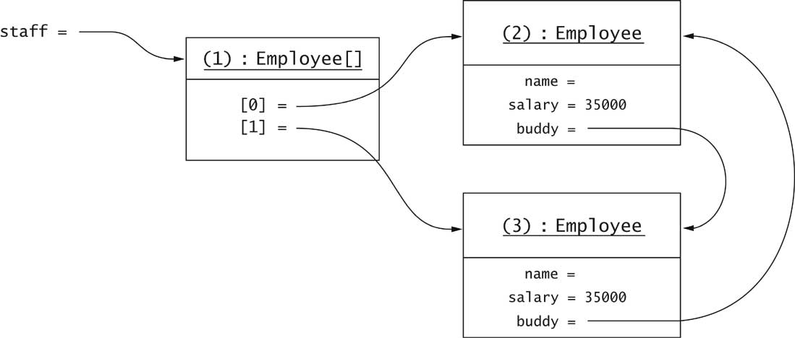

Object-Oriented Design & Patterns
Cay S. Horstmann
Chapter 7
The Java Object Model

Chapter Topics
- The Java Type System
- Type Inquiry
- The Object Class
- Shallow and Deep Copy
- Serialization
- Reflection
- The Java Beans Component Model
Types
- Type: set of values and the operations that can be applied to the
values
- Strongly typed language: compiler and run-time system check that
no operation can execute that violates type system rules
- Compile-time check
Employee e = new Employee();
e.clear(); // ERROR
- Run-time check:
e = null;
e.setSalary(20000); // ERROR
Java Types
- Primitive types:
int short long byte
char float double boolean
- Class types
- Interface types
- Array types
- The null type
- Note: void is not a type
Exercise: What kind of type?
- int
- Rectangle
- Shape
- String[]
- double[][]
Java Values
- value of primitive type
- reference to object of class type
- reference to array
- null
- Note: Can't have value of interface type
Exercise: What kind of value?
- 13
- new Rectangle(5, 10, 20, 30);
- "Hello"
- new int[] { 2, 3, 5, 7, 11, 13 }
- null
Subtype Relationship
S is a subtype of T if
- S and T are the same type
- S and T are both class types, and T is a direct or indirect
superclass of S
- S is a class type, T is an interface type, and S or one of its
superclasses implements T
- S and T are both interface types, and T is a direct or indirect
superinterface of S
- S and T are both array types, and the component type of S is a
subtype of the component type of T
- S is not a primitive type and T is the type Object
- S is an array type and T is Cloneable or Serializable
- S is the null type and T is not a primitive type
Subtype Examples
- Container is a subtype of Component
- JButton is a subtype of Component
- FlowLayout is a subtype of LayoutManager
- ListIterator is a subtype of Iterator
- Rectangle[] is a subtype of Shape[]
- int[] is a subtype of Object
- int is not a subtype of long
- long is not a subtype of int
- int[] is not a subtype of Object[]
Subtype Examples

The ArrayStoreException
Array References

Wrapper Classes
Enumerated Types
- Finite set of values
- Example: enum Size { SMALL, MEDIUM, LARGE }
- Typical use:
Size imageSize = Size.MEDIUM;
if (imageSize == Size.SMALL) . . .
- Safer than integer constants
public static final int SMALL = 1;
public static final int MEDIUM = 2;
public static final int LARGE = 3;
Typesafe Enumerations
- enum equivalent to class with fixed number of instances
public class Size
{
private /* ! */ Size() { }
public static final Size SMALL = new
Size();
public static final Size MEDIUM = new
Size();
public static final Size LARGE = new Size();
}
- enum types are classes; can add methods, fields,
constructors
Type Inquiry
- Test whether e is a Shape:
if (e instanceof Shape) . . .
- Common before casts:
Shape s = (Shape) e;
- Don't know exact type of e
- Could be any class implementing Shape
- If e is null, test returns false
(no exception)
The Class Class
An Employee Object vs. the Employee.class Object

Type Inquiry
- Test whether e is a Rectangle:
if (e.getClass() == Rectangle.class) . . .
- Ok to use ==
- A unique Class object for every class
- Test fails for subclasses
- Use instanceof to test for subtypes:
if (e instanceof Rectangle) . . .
Array Types
Object: The Cosmic Superclass
- All classes extend Object
- Most useful methods:
- String toString()
- boolean equals(Object otherObject)
- Object clone()
- int hashCode()
The toString Method
- Returns a string representation of the object
- Useful for debugging
- Example: Rectangle.toString returns something like
java.awt.Rectangle[x=5,y=10,width=20,height=30]
- toString used by concatenation operator
- aString + anObject
means
aString + anObject.toString()
- Object.toString prints class name and object address
System.out.println(System.out)
yields
java.io.PrintStream@d2460bf
- Implementor of PrintStream didn't override toString:
Overriding the toString Method
- Format all fields:
public class Employee
{
public String toString()
{
return getClass().getName()
+ "[name=" + name
+ ",salary=" + salary
+ "]";
}
...
}
- Typical string:
Employee[name=Harry Hacker,salary=35000]
Overriding toString in Subclass
- Format superclass first
-
public class Manager extends Employee
{
public String toString()
{
return super.toString()
+ "[department=" + department + "]";
}
...
}
- Typical string
Manager[name=Dolly Dollar,salary=100000][department=Finance]
- Note that superclass reports actual class name
The equals Method
- equals tests for equal contents
- == tests for equal location
- Used in many standard library methods
- Example: ArrayList.indexOf
/**
Searches for the first occurrence of the given argument,
testing for equality using the equals method.
@param elem an object.
@return the index of the first occurrence
of the argument in this list; returns -1 if
the object is not found.
*/
public int indexOf(Object elem)
{
if (elem == null)
{
for (int i = 0; i < size; i++)
if (elementData[i] == null) return i;
}
else
{
for (int i = 0; i < size; i++)
if (elem.equals(elementData[i])) return i;
}
return -1;
}
Overriding the equals Method
Overriding equals in Subclass
Not all equals Methods are Simple
The Object.equalsMethod
Requirements for equals Method
- reflexive: x.equals(x)
- symmetric: x.equals(y) if and only if y.equals(x)
- transitive: if x.equals(y) and y.equals(z),
then x.equals(z)
- x.equals(null) must return false
Fixing Employee.equals
- Violates two rules
- Add test for null:
if (otherObject == null) return false
- What happens if otherObject not an Employee
- Should return false (because of symmetry)
- Common error: use of instanceof
if (!(otherObject instanceof Employee)) return false;
// don't do this for non-final classes
- Violates symmetry: Suppose e, m have same name, salary
e.equals(m) is true (because m instanceof
Employee)
m.equals(e) is false (because e isn't
an instance of Manager)
- Remedy: Test for class equality
if (getClass() != otherObject.getClass()) return false;
The Perfect equals Method
Hashing
- hashCode method used in HashMap, HashSet
- Computes an int from an object
- Example: hash code of String
int h = 0;
for (int i = 0; i < s.length(); i++)
h = 31 * h + s.charAt(i);
- Hash code of "eat" is 100184
- Hash code of "tea" is 114704
Hashing
Shallow and Deep Copy
- Assignment (copy = e) makes shallow copy
- Clone to make deep copy
- Employee cloned = (Employee)e.clone();
Cloning

Cloning
The Cloneable Interface
The clone Method
public class Employee
implements Cloneable
{
public Object clone()
{
try
{
return super.clone();
}
catch(CloneNotSupportedException e)
{
return null; // won't happen
}
}
...
}
Shallow Cloning
- clone makes a shallow copy
- Instance fields aren't cloned

Deep Cloning
- Why doesn't clone make a deep copy?
Wouldn't work for cyclic data structures
- Not a problem for immutable fields
- You must clone mutable fields
public class Employee
implements Cloneable
{
public Object clone()
{
try
{
Employee cloned = (Employee)super.clone();
cloned.hireDate = (Date)hiredate.clone();
return cloned;
}
catch(CloneNotSupportedException e)
{
return null; // won't happen
}
}
...
}
Deep Cloning

Cloning and Inheritance
- Object.clone is paranoid
- clone only clones Cloneable objects
- clone throws checked exception
- You don't have that luxury
- Manager.clone must be defined if Manager
adds mutable fields
- Rule of thumb: if you extend a class that defines clone,
redefine clone
- Lesson to learn: Tagging interfaces are inherited. Use them only
to tag properties that inherit
Serialization
- Save collection of objects to stream
Employee[] staff = new Employee[2];
staff.add(new Employee(...));
staff.add(new Employee(...));
- Construct ObjectOutputStream:
ObjectOutputStream out
= new ObjectOutputStream(
new FileOutputStream("staff.dat"));
- Save the array and close the stream
out.writeObject(staff);
out.close();
Serialization
- The array and all of its objects and their dependent objects
are saved
- Employee doesn't have to define any method
- Needs to implement the Serializable interface
- Another tagging interface with no methods
How Serialization Works
- Each newly encountered object is saved
- Each object gets a serial number in the stream
- No object is saved twice
- Reference to already encountered object saved as "reference to #"
How Serialization Works

Serialing Unserializable Classes
- Some classes are not serializable
- Security? Anonymous classes? Programmer cluelessness?
- Example: Ellipse2D.Double
- How can we serialize Car?
- Suppress default serialization to avoid exception
- Mark with transient:
private transient Ellipse2D frontTire;
- Supply private (!) methods
private void writeObject(ObjectOutputStream out)
private void readObject(ObjectInputStream in)
- In these methods
- Call writeDefaultObject/readDefaultObject
- Manually save other data
- Ch7/serial/Car.java
Reflection
- Ability of running program to find out about its objects and
classes
- Class object reveals
- superclass
- interfaces
- package
- names and types of fields
- names, parameter types, return types of methods
- parameter types of constructors
Reflection
- Class getSuperclass()
- Class[] getInterfaces()
- Package getPackage()
- Field[] getDeclaredFields()
- Constructor[] getDeclaredConstructors()
- Method[] getDeclaredMethods()
Enumerating Fields
Enumerating Constructors
- Print the names and parameter types of all Rectangle
constructors:
for (Constructor c : cons)
{
Class[] params = cc.getParameterTypes();
System.out.print("Rectangle(");
boolean first = true;
for (Class p : params)
{
if (first) first = false; else System.out.print(", ");
System.out.print(p.getName());
}
System.out.println(")");
}
- Yields
Rectangle()
Rectangle(java.awt.Rectangle)
Rectangle(int, int, int, int)
Rectangle(int, int)
Rectangle(java.awt.Point, java.awt.Dimension)
Rectangle(java.awt.Point)
Rectangle(java.awt.Dimension)
Getting A Single Method Descriptor
- Supply method name
- Supply array of parameter types
- Example: Get Rectangle.contains(int, int):
Method m = Rectangle.class.getDeclaredMethod(
"contains", int.class, int.class);
- Example: Get default Rectangle constructor:
Constructor c = Rectangle.class.getDeclaredConstructor();
- getDeclaredMethod, getDeclaredConstructor are
varargs methods
Invoking a Method
- Supply implicit parameter (null for static methods)
- Supply array of explicit parameter values
- Wrap primitive types
- Unwrap primitive return value
- Example: Call System.out.println("Hello, World") the
hard way.
Method m = PrintStream.class.getDeclaredMethod(
"println", String.class);
m.invoke(System.out, "Hello, World!");
- invoke is a varargs method
Inspecting Objects
- Can obtain object contents at runtime
- Useful for generic debugging tools
- Need to gain access to private fields
Class c = obj.getClass();
Field f = c.getDeclaredField(name);
f.setAccessible(true);
- Throws exception if security manager disallows access
- Access field value:
Object value = f.get(obj);
f.set(obj, value);
- Use wrappers for primitive types
Inspecting Objects
- Example: Peek inside string tokenizer
- Ch7/code/reflect2/FieldTester.java
- Output
int currentPosition=0
int newPosition=-1
int maxPosition=13
java.lang.String str=Hello, World!
java.lang.String delimiters=,
boolean retDelims=false
boolean delimsChanged=false
char maxDelimChar=,
---
int currentPosition=5
. . .
Inspecting Array Elements
- Use static methods of Array class
-
Object value = Array.get(a, i);
Array.set(a, i, value);
-
int n = Array.getLength(a);
- Construct new array:
Object a = Array.newInstance(type, length);
Generic Types
Generic Methods
- Generic method = method with type parameter(s)
-
public class Utils
{
public static <E> void fill(ArrayList<E> a, E value, int count)
{
for (int i = 0; i < count; i++)
a.add(value);
}
}
- A generic method in an ordinary (non-generic) class
- Type parameters are inferred in call
ArrayList<String> ids = new ArrayList<String>();
Utils.fill(ids, "default", 10); // calls Utils.<String>fill
Type Bounds
Type Bounds
- Overcome limitation with type bound:
public static <E, F extends E> void append(
ArrayList<E> a, ArrayList<F> b, int count)
{
for (int i = 0; i < count && i < b.size(); i++)
a.add(b.get(i));
}
- extends means "subtype", i.e. extends or implements
- Can specify multiple bounds:
E extends Cloneable & Serializable
Wildcards
Wildcards
- Wildcards restrict methods that can be called:
ArrayList<? extendsE>.set method has the form
? extends E add(? extends E newElement)
- You cannot call this method!
- No value matches ? extends E because ? is
unknown
- Ok to call get:
? extends E get(int i)
- Can assign return value to an element of type E
Wildcards
- Wildcards can be bounded in opposite direction
- ? super F matches any supertype of F
- public static <F> void append(
ArrayList<? super F> a, ArrayList<F> b,
int count)
{
for (int i = 0; i < count && i < b.size();
i++)
a.add(b.get(i));
}
- Safe to call ArrayList<? super F>.add:
boolean add(? super F newElement)
- Can pass any element of type F (but not a supertype!)
Wildcards
- Typical example--start with
public static <E extends Comparable<E>> E getMax(ArrayList<E> a)
{
E max = a.get(0);
for (int i = 1; i < a.size(); i++)
if (a.get(i).compareTo(max) > 0) max = a.get(i);
return max;
}
- E extends Comparable<E> so that we can
call compareTo
- Too restrictive--can't call with ArrayList<GregorianCalendar>
- GregorianCalendar does not implement Comparable<GregorianCalendar>,
only Comparable<Calendar>
- Wildcards to the rescue:
public static <E extends Comparable<? super E>> E getMax(ArrayList<E> a)
Type Erasure
- Virtual machine does not know about generic types
- Type variables are erased--replaced by type bound or Object
if unbounded
- Ex. ArrayList<E> becomes
public class ArrayList
{
public Object get(int i) { . . . }
public Object set(int i, Object newValue) { . . . }
. . .
private Object[] elementData;
}
- Ex. getmax becomes
public static Comparable getMax(ArrayList a)
// E extends Comparable<? super E> erased to Comparable
- Erasure necessary to interoperate with legacy (pre-JDK 5.0) code
Limitations of Generics
- Cannot replace type variables with primitive types
- Cannot construct new objects of generic type
a.add(new E()); // Error--would erase to new Object()
- Workaround: Use class literals
public static <E> void fillWithDefaults(ArrayList<E>,
Class<? extends E> cl, int count)
throws InstantiationException, IllegalAccessException
{
for (int i = 0; i < count; i++)
a.add(cl.newInstance());
}
- Call as fillWithDefaults(a, Rectangle.class, count)
Limitations of Generics
- Cannot form arrays of parameterized types
Comparable<E>[] is illegal. Remedy: ArrayList<Comparable<E>>
- Cannot reference type parameters in a static context (static
fields, methods, inner classes)
- Cannot throw or catch generic types
- Cannot have type clashes after erasure. Ex. GregorianCalendar
cannot implement Comparable<GregorianCalendar>
since it already implements Comparable<Calendar>, and
both erase to Comparable
Components
- More functionality than a single class
- Reuse and customize in multiple contexts
- "Plug components together" to form applications
- Successful model: Visual Basic controls
- calendar
- graph
- database
- link to robot or instrument
- Componens composed into program inside builder environment
A Builder Environment

Java Beans
- Java component model
- Bean has
- methods (just like classes)
- properties
- events
Java Beans
A Calendar Bean

A Property Sheet
- Edit properties with property sheet

Façade Class
- Bean usually composed of multiple classes
- One class nominated as facade class
- Clients use only facade class methods
Façade Pattern
Context
- A subsystem consists of multiple classes, making it complicated
for clients to use
- Implementor may want to change subsystem classes
- Want to give a coherent entry point
Solution
- Define a facade class that exposes all capabilities of the
subsystem as methods
- The facade methods delegate requests to the subsystem classes
- The subsystem classes do not know about the facade class
Façade Pattern
Façade Pattern
Name in
Design Pattern
|
Actual Name
(Beans)
|
Client
|
Builder tool
|
Facade
|
Main bean class with which the
tool interacts
|
SubsystemClass
|
Class used to implement bean
functionality |
Bean Properties
- Property = value that you can get and/or set
- Most properties are get-and-set
- Can also have get-only and set-only
- Property not the same as instance field
- Setter can set fields, then call repaint
- Getter can query database
Property Syntax
- Not Java :-(
- C#, JavaScript, Visual Basic
- b.propertyName = value
calls setter
- variable = b.propertyName
calls getter
Java Naming Conventions
- property = pair of methods
public X getPropertyName()
public void setPropertyName(X newValue)
- Replace propertyName with actual name
(e.g. getColor/setColor)
- Exception for boolean properties:
public boolean isPropertyName()
- Decapitalization hokus-pokus:
getColor -> color
getURL -> URL
Editing Beans in a Builder Tool
- Use wizard to make empty frame

Editing Beans in a Builder Tool
- Add button to frame
- Edit button with property sheet

Packaging a Bean
Composing Beans
- Make new frame
- Add car bean, slider to frame
- Edit stateChanged event of slider
- Add handler code
carBean1.setX(jSlider1.getValue());
- Compile and run
- Move slider: the car moves
Composing Beans